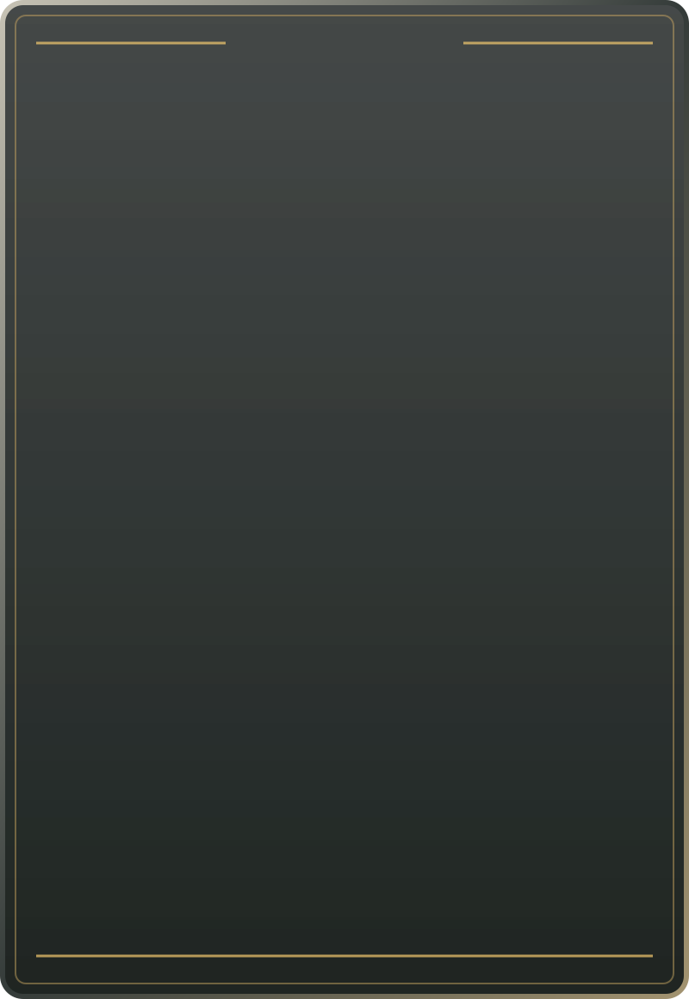

VRAI OU FAUX · CARTE CENTRALE

VAR
VRAI OU FAUX
AFFIRMATION 2 / 5
Zlatan Ibrahimović a joué au PSG.
CAGNOTTE1 PT
Aperçu de la seule carte centrale. L'application fournit les vraies affirmations, le numéro, la cagnotte, les scores, le chrono, le Tackle et son panneau de verdict commun.